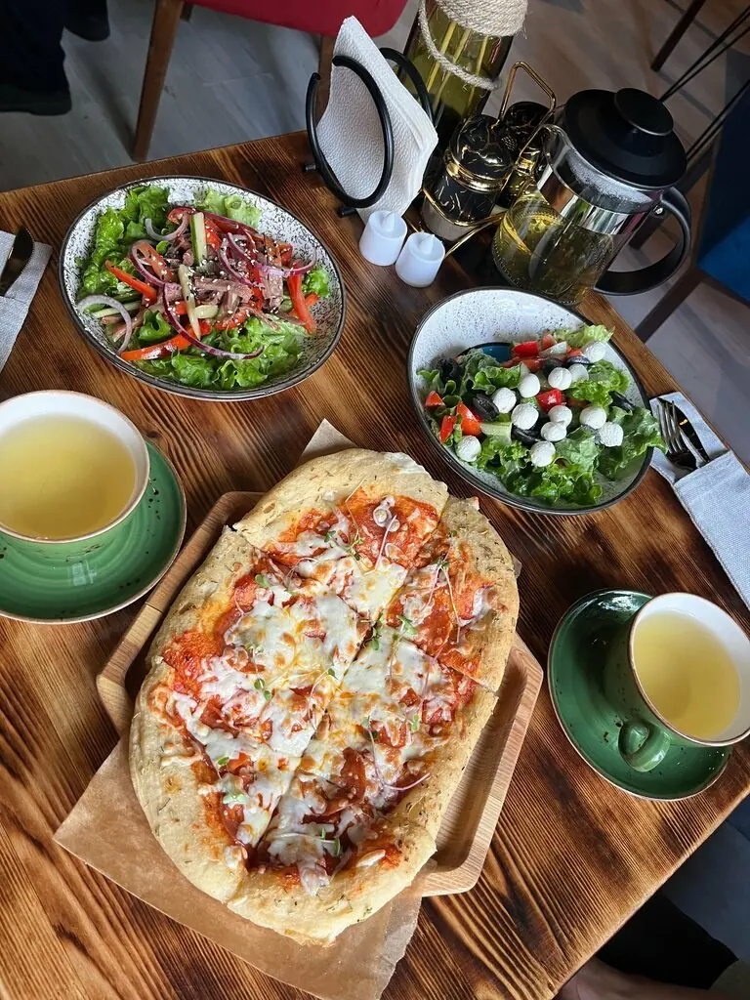
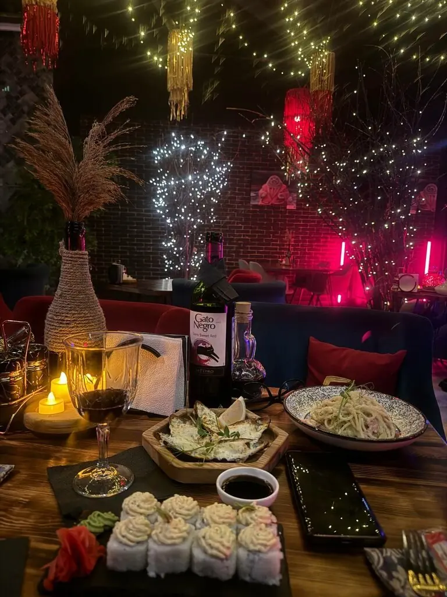

Ангарск+7 999 642-01-11
Точка G
Гастро-лоджия, где в зале висит луна, «как настоящая» по словам гостей. С утра блинчики, ночью вино и живая музыка.
4,3 · 107 оценок
Растущая луна · с 08:00
Утро
Драники с лососем400 ₽
Сырники350 ₽
Блинный рыбак550 ₽
Рисовая малиновая каша200 ₽

Полная луна · до 02:00
Ночь

Шаурма куриная450 ₽
Шаурма сырная550 ₽
Шаурма рыбная1 000 ₽
Панини-чиз «Оушен»650 ₽
Часть меню с Яндекс Карт и 2ГИС, цены уточняйте у официанта.
С Земли пишут
Очень понравилось, место очень атмосферное. Луна как настоящая.Елена Н.
Очень приятный коллектив, вкусная кухня. Меню в доступных ценах.Радион Размыслов
Хорошее заведение, приятная атмосфера, вкусные блюда, вежливый персонал.Даниил Другов